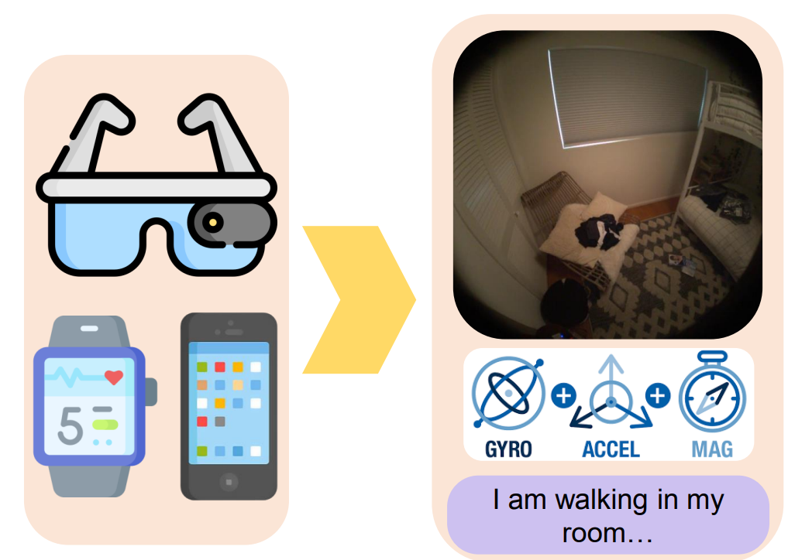

Rishabh Dabral
 |
I am leading the "3D Visual Intelligence" Research Group at the Max-Planck Institute for Informatics. I am also associated with the Research Training Group on Neuro-Explicit Models of Language, Vision, and Action at Saarland University. My research interests lie in the intersection of 3D computer vision, computer graphics and multi-modal interactions. I am particularly interested in developing algorithms for 3D human performance capture and synthesis. Some research questions that we explore include:
|
Research
|  | Ego4o: Egocentric Human Motion Capture and Understanding from Multi-Modal Input Jian Wang, Rishabh Dabral, Diogo Luvizon, Zhe Cao, Lingjie Liu, Thabo Beeler, Christian Theobalt Computer Vision and Pattern Recognition (CVPR), 2025, Nashville [Project Page][Arxiv] |
| Retrieving Semantics from the Deep: an RAG Solution for Gesture Synthesis Muhammad Hamza Mughal, Rishabh Dabral, Merel C.J. Scholman, Vera Demberg, Christian Theobalt Computer Vision and Pattern Recognition (CVPR), 2025, Nashville [Project Page][Arxiv] |
|
| BimArt: A Unified Approach for the Synthesis of 3D Bimanual Interaction with Articulated Objects Wanyue Zhang, Rishabh Dabral, Vladislav Golyanik, Vasileios Choutas, Eduardo Elvarado, Thabo Beeler, Marc Habermann, Christian Theobalt Computer Vision and Pattern Recognition (CVPR), 2025, Nashville [Project Page][Paper] |
|
| FRAME: Floor-aligned Representation for Avatar Motion from Egocentric Video Andrea Boscolo Camiletto, Jian Wang, Eduardo Alvarado, Rishabh Dabral, Thabo Beeler, Marc Habermann, Christian Theobalt Computer Visiona and Pattern Recognition (CVPR), 2025, Nashville (Highlight) [Project Page][Arxiv][Dataset] |
|
| DUT: Real-time Free-view Human Rendering from Sparse-view RGB Videos using Double Unprojected Textures Guoxing Sun, Rishabh Dabral, Heming Zhu, Pascal Fua, Christian Theobalt, Marc Habermann Computer Vision and Pattern Recognition (CVPR), 2025, Nashville (Highlight) [Project Page][Arxiv] |
|
 |
3HANDS Dataset: Learning from Humans for Generating Naturalistic Handovers with Supernumerary Robotic Limbs Artin Saberpour Abadian, Yi-Chi Liao, Ata Otaran, Rishabh Dabral, Marie Muehlhaus, Christian Theobalt, Martin Schmitz, Juergen Steimle Human Factors in Computing Systems (CHI), 2025, Yokohama [Project Page][Paper][Dataset] |
| Betsu-Betsu: Separable 3D Reconstruction of Two Interacting Objects from Multiple Views Suhas Gopal, Rishabh Dabral, Vladislav Golyanik, Christian Theobalt 3D Vision (3DV) 2025, Singapore [Project Page][Arxiv] |
|
| PocoLoco: A Point Cloud Diffusion Model of Human Shape in Loose Clothing Siddharth Seth, Rishabh Dabral, Diogo Luvizon, Marc Habermann, Ming-Hsuan Yang, Christian Theobalt, Adam Kortylewski Winter Conference on Applications of Computer Vision (WACV) 2025, Hawaii [Project Page][Arxiv] |
|
|
MetaCap: Meta-learning Priors from Multi-View Imagery for Sparse-view Human Performance Capture and Rendering Guoxing Sun, Rishabh Dabral, Pascal Fua, Christian Theobalt, Marc Habermann European Conference on Computer Vision (ECCV), 2024, Milan [Project Page] [Arxiv] |
|
| ReMoS: Reactive 3D Motion Synthesis for Two-Person Interactions Anindita Ghosh, Rishabh Dabral, Vladislav Golyanik, Christian Theobalt, Philipp Slusallek European Conference on Computer Vision (ECCV), 2024, Milan [Project Page][Arxiv] |
|
|
ConvoFusion: Multi-Modal Conversational Diffusion for Co-Speech Gesture Synthesis Muhammad Hamza Mughal, Rishabh Dabral, Ikhsanul Habibie, Lucia Donatelli, Marc Habermann, Christian Theobalt Computer Vision and Pattern Recognition (CVPR), 2024, Seattle [Project Page] [Arxiv] [Code] |
|
 |
ROAM: Robust and Object-aware Motion Generation using Neural Pose Descriptors Wanyue Zhang, Rishabh Dabral, Thomas Leimkuehler, Vladislav Golyanik, Marc Habermann, Christian Theobalt International Conference on 3D Vision (3DV), 2024, Davos [Project Page][PDF][Video] |
| 3D-QAE: Fully Quantum Auto-Encoding of 3D Point Clouds. Lakshika Rathi, Edith Tretschk, Christian Theobalt, Rishabh Dabral, Vladislav Golyanik British Machine Vision Conference (BMVC), 2023, Aberdeen [Project Page][PDF] |
|
| WRLKIT: Computational Design of Personalized Wearable Robotic Limbs Artin Saberpour Abadian, Ata Otaran, Martin Schmitz, Marie Muehlhaus, Rishabh Dabral, Diogo Luvizon, Azumi Maekawa, Masahiko Inami, Christian Theobalt, and Jürgen Steimle ACM Symposium on User Interface Software and Technology (UIST), 2023, San Francisco [Project Page][PDF][Video] |
|
| MoFusion: A Framework for Denoising-Diffusion-based Motion Synthesis Rishabh Dabral, Muhammad Hamza Mughal, Vladislav Golyanik, Christian Theobalt Computer Vision and Pattern Recognition (CVPR), 2023, Vancouver (Highlight) [Project Page][Youtube] |
|
| IMOS: Intent-Driven Full-Body Motion Synthesis for Human-Object Interactions Anindita Ghosh, Rishabh Dabral, Vladislav Golyanik, Christian Theobalt, Philipp Slusallek Eurographics 2023, Saarbrucken [Project Page][Youtube] |
|
| State of the Art in Dense Monocular Non-Rigid 3D Reconstruction Edith Tretschk*, Navami Kairanda*, Mallikarjun B R, Rishabh Dabral, Adam Kortylewski, Bernhard Egger, Marc Habermann, Pascal Fua, Christian Theobalt, Vladislav Golyanik Eurographics (STAR) 2023, Saarbrucken [Project Page][Youtube] |
|
| Gravity-Aware 3D Human-Object Reconstruction Rishabh Dabral, Soshi Shimada, Arjun Jain, Christian Theobalt, Vladislav Golyanik International Conference on Computer Vision (ICCV), 2021, Montreal [Project Page][Youtube][Code] |
|
| Cross-Modal Learning for Audio-Visual Video Parsing Jatin Lamba, Jayaprakash Akula, Abhishek, Rishabh Dabral, Preethi Jyothi, Ganesh Ramakrishnan InterSpeech 2021, Brno |
|
| Rudder: A Cross Lingual Video and Text Retrieval Dataset Jayaprakash Akula, Abhishek, Rishabh Dabral, Ganesh Ramakrishnan, Preethi Jyothi International Conference on Multimodal Interaction (ICMI), 2021, Montreal |
|
| Exploration of Spatial and Temporal Alternatives for HOI in Videos Rishabh Dabral, Srijon Sarkar, Sai Praneeth Reddy, Ganesh Ramakrishnan Winter Conference on Application of Computer Vision (WACV), 2021 |
|
| LIGHTEN: Learning Interactions using Graphs and Hierarchical TEmporal Networks for HOI in Videos Sai Praneeth Reddy, Rishabh Dabral, Ganesh Ramakrishnan ACM Multimedia 2020, Seattle (Oral) [PDF][Code] |
|
 |
Multi-Person 3D Human Pose Estimation from Monocular Images Rishabh Dabral, Nitesh Bharadwaj, Rahul Mitra, Abhishek Sharma, Ganesh Ramakrishnan, Arjun Jain Interanational Conference on 3D Vision (3DV), 2019, Quebec City [PDF][Youtube] |
| Progression Modelling for Online and Early Gesture Detection Vikram Gupta, Sai Kumar Dwivedi, Rishabh Dabral, Arjun Jain Interanational Conference on 3D Vision (3DV), 2019, Quebec City (Oral) [arXiv Preprint][Dataset] |
|
| Learning 3D Human Pose from Structure and Motion Rishabh Dabral, Anurag Mundhada, Uday Kusupati, Safeer Afaque, Abhishek Sharma, Arjun Jain European Conference on Computer Vision (ECCV), 2018, Munich [Project Page][arXiv Preprint][Youtube] |
Teaching
| Summer 2025: | Co-Instructor for Advanced Topics of Computer Vision and Computer Graphics in the age of Artificial Intelligence |
| Winter 2024: | Co-Instructor for Advanced Topics in Neural Rendering and Reconstruction |
| Summer 2024: | Co-Instructor for Classical Concepts of Computer Vision and Computer Graphics in the Neural Age |
| Spring 2019: | Teaching Assistant for CS763 - Computer Vision |
| Spring 2018: | Teaching Assistant for CS763 - Computer Vision |
| Spring 2017: | Teaching Assistant for CS725 - Foundations of Machine Learning |
Contact
Email: rdabral@mpi-inf.mpg.de
Address: 221, MPI-Informatik, Stuhlsatzenhausweg E1 4, 66123 Saarbrücken